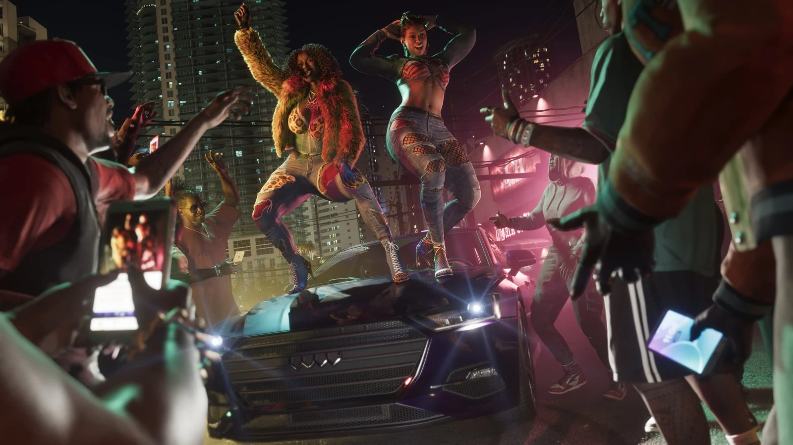

Is GTA Online in GTA 6 at launch?

What Rockstar has confirmed
The 19 November launch is the single-player story of Jason and Lucia in Leonida. A new online mode is not part of the launch package, and Rockstar has not announced its release date. Online date: not announced
What about the current GTA Online?
The existing GTA Online (the GTA V version) is a separate game and continues as its own service. Your progress there does not depend on GTA 6's launch.
What is only rumour
Reports and leaks speculate about when a GTA 6 online mode could arrive and what it might contain. None of that is confirmed, so we do not present it as fact here. When Rockstar announces real details, this page will be updated with a source and a check date. Reported
For launch day itself, start with the launch day checklist and the mission guides hub.
Can you play GTA 6 with friends at launch?
No. The launch package is the single-player story only — there is no multiplayer or co-op mode in the game at launch. If you bought GTA 6 to play with friends on day one, the honest answer is that there is nothing to play together yet. Compare the editions on the price and editions page — no edition adds an online mode at launch.
Will your GTA Online progress transfer?
Rockstar has not announced any transfer of characters, money or progress from the current GTA Online into a future GTA 6 online mode. Treat any site claiming a transfer date or a transfer method as rumour. Not announced
FAQ
Is GTA 6 Online available now?
No. GTA 6 launched on 19 November 2026 as a single-player story game; its online mode is not available at launch. Confirmed
When is GTA 6 Online coming out?
Not announced. Rockstar has not given a release date for a GTA 6 online mode. Not announced
Will my GTA Online progress transfer to GTA 6?
Not announced. Rockstar has not said anything about transfers. The current GTA Online (GTA V) continues as its own separate service, and your progress there is unaffected by GTA 6's launch. Not announced